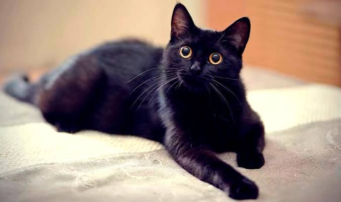

Semanario Gatuno
Miller VillamizarEstos fascinantes artículos exploran el apasionante mundo de los gatos, desde su intrigante historia hasta sus singulares personalidades. Descubre las curiosidades detrás de los gatos negros, su papel en la mitología y supersticiones, y cómo se han convertido en iconos de la cultura popular. Acompáñanos en un viaje que revela la belleza y el misterio de estos felinos, así como su impacto en la vida humana a lo largo de la historia.
Gatos Negros
Los gatos negros, con su elegante y misteriosa apariencia, han sido durante mucho tiempo objeto de mitos y supersticiones en diferentes culturas alrededor del mundo. A menudo asociados con la buena suerte en algunas sociedades y con la mala suerte en otras, los gatos negros han desatado la imaginación de generaciones. A pesar de las supersticiones, los gatos negros son simplemente otra variante de estos felinos asombrosos. Su pelaje oscuro es el resultado de la genética y no afecta su personalidad amigable, independiente y cariñosa. Estos gatos a menudo se destacan en la oscuridad, creando una imagen de gracia y enigma. En la cultura popular, los gatos negros a menudo se asocian con la brujería y la magia, añadiendo un toque de misterio a las historias y leyendas. Sin embargo, para aquellos que tienen la suerte de compartir sus vidas con un gato negro, descubren que son compañeros leales y encantadores que traen alegría y amor a sus hogares. Los gatos negros son verdaderamente especiales y merecen ser apreciados por su singular belleza y personalidad cautivadora.